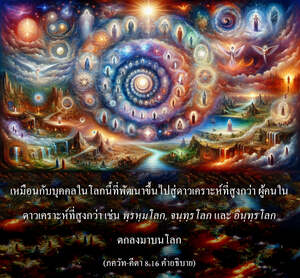

จากดาวเคราะห์สูงสุดในโลกวัตถุลงไปถึงดาวเคราะห์ต่ำสุด ทั้งหมดเป็นสถานที่แห่งความทุกข์ที่มีการเกิดและการตายซ้ำซาก แต่ผู้ที่บรรลุถึงพระตำหนักของข้า โอ้ โอรสพระนาง กุนฺตี จะไม่กลับมาเกิดอีก



โยคะทั้งหมด เช่น กรฺม, ชฺญาน, หฐ ฯลฯ ในที่สุดต้องมาถึงความสมบูรณ์แห่งการอุทิศตนเสียสละใน ภกฺติ-โยค หรือ กฺฤษฺณจิตสำนึก ก่อนที่จะไปถึงพระตำหนักทิพย์ของศฺรีกฺฤษฺณ และไม่ต้องกลับมา พวกที่บรรลุถึงดาวเคราะห์วัตถุสูงสุดต่างๆ ของเทวดายังจะต้องกลับมาเกิด และตายครั้งแล้วครั้งเล่า เหมือนกับบุคคลในโลกนี้ที่พัฒนาขึ้นไปสู่ดาวเคราะห์ที่สูงกว่า ผู้คนในดาวเคราะห์ที่สูงกว่า เช่น พฺรหฺมโลก, จนฺทฺรโลก และ อินฺทฺรโลก ตกลงมาบนโลก การปฏิบัติบูชาเรียกว่า ปญฺจาคฺนิ-วิทฺยา แนะนำไว้ใน ฉานฺโทคฺย อุปนิษทฺ ช่วยให้บรรลุถึง พฺรหฺมโลก หากอยู่ที่ พฺรหฺมโลก แล้วไม่เจริญในกฺฤษฺณจิตสำนึกเขาต้องกลับมาบนโลกอีก พวกที่พัฒนากฺฤษฺณจิตสำนึกบนดาวเคราะห์สูงจะพัฒนาสูงขึ้นไปเรื่อยๆ และเมื่อถึงเวลาแห่งการทำลายล้างจักรวาลจะถูกย้ายไปยังอาณาจักรทิพย์อมตะ พลเทว วิทฺยาภูษณ อธิบายใน ภควัท-คีตา ของท่านโดยอ้างโศลกนี้
พฺรหฺมณา สห เต สเรฺว
สมฺปฺราปฺเต ปฺรติสญฺจเร
ปรสฺยานฺเต กฺฤตาตฺมานห์
ปฺรวิศนฺติ ปรํ ปทมฺ
“เมื่อมีการทำลายล้างจักรวาลวัตถุ พระพรหม และสาวกของท่านทั้งหมดที่ปฏิบัติในกฺฤษฺณจิตสำนึกอยู่เสมอ จะถูกย้ายไปยังจักรวาลทิพย์ และไปยังดาวเคราะห์ทิพย์โดยเฉพาะตามที่ตนปรารถนา”